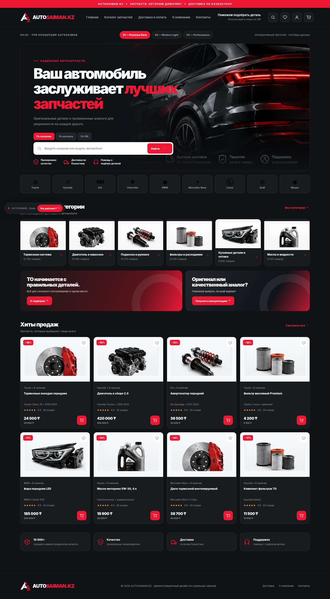
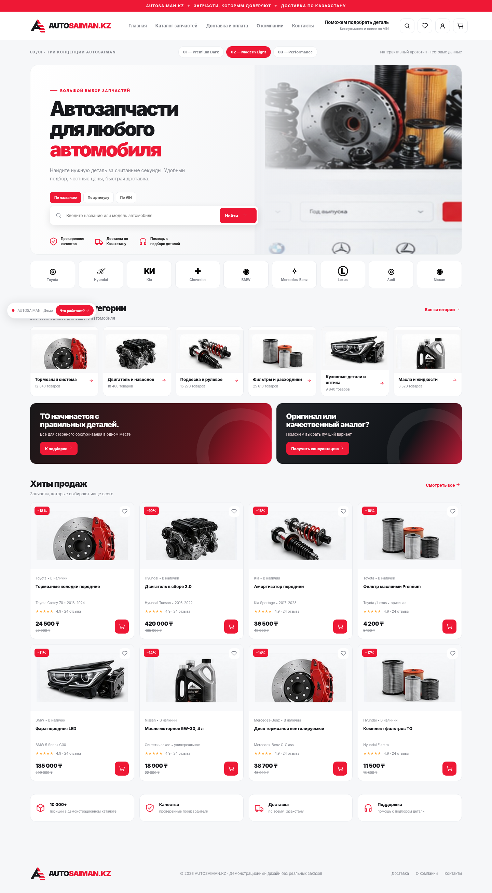
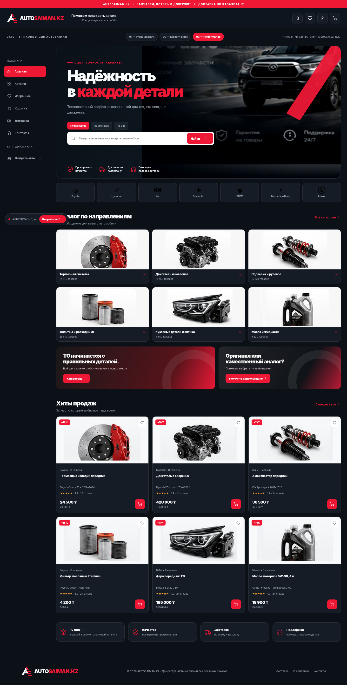

ВАРИАНТ 01
PREMIUM DARK
Премиальный и контрастный
Тёмный интерфейс, акцент на качестве и эффектной подаче.
Открыть интерактивный макет ↗Выберите любую концепцию и проверьте сценарии магазина: поиск, категории, фильтры, карточки товаров, корзина, избранное и мобильное меню.

Тёмный интерфейс, акцент на качестве и эффектной подаче.
Открыть интерактивный макет ↗
Быстрый подбор по каталогу, практичная структура магазина.
Открыть интерактивный макет ↗
Темная навигация, редакционный акцент и быстрые действия.
Открыть интерактивный макет ↗